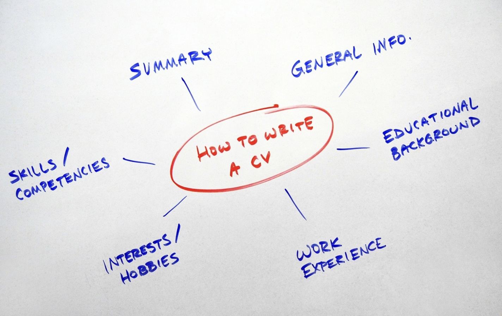

Building Your Brand
Ready Set Work! believes it is important for young people to show off their skills and talents, whether in the form of a resume or a portfolio. This section will give you tips on how to make sure you shine when applying for jobs!
Resume Tips
- Keep your resume (sometimes called a CV) to one page.
- Do not include a photo of yourself OR your home address.
- Include classes that relate directly to the job you are applying for, such as math or a foreign language.
- Use your extra-curricular activities to highlight such skills as leadership, teamwork, and initiative.
- Consider creating a new email address that you only use for job applications.

Portfolio Tips
- Tailor your portfolio to the job you are applying for.
- Confirm that all links are working before sharing your work.
- Consider adding a brief description of each project, including the original assignment and how you tackled it.